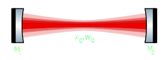

This is a simple calculator for linear optical resonators (cavities), i.e. for an optical system that looks like this:

If this doesn't look familiar to you, you probably won't need this calculator.
You will need to provide some basic optical and geometric properties of the cavity:
From these inputs, the calculator will do some heavy thinking and then come up with these results:
The above results are always calculated, even if the cavity is unstable. This is done for convenience: one can quickly play around with e.g. the mirror reflectivities to find a suitable finesse value, without caring about suitable RoCs. Of course, to also see those values in an experiment one would first of all have to make the cavity stable.
For a stable cavity, the following additional parameters will be calculated:
Note that the calculation assumes that all modes of Nth order (TEMmn where m+n=N) are degenerate. This is usually a good approximation as long as there is rotational symmetry within the cavity, e.g. the mirrors are non-astigmatic.
†The height and intensity of the lines just serve to visually distinguish them and should not be mistaken for a representation of the actual mode content.
Just a recent version of one of the standard web browsers (Chrome, Safari, Firefox, Edge, Opera, etc.). It should even run fine on your mobile phone! To keep things simple (for me, mostly...), I used some code techniques that were introduced only recently (as of 2016), so if you're stuck with an older web browser for some reason, it's highly likely that this calculator won't work for you, sorry.
The calculation runs entirely inside your browser, so apart from loading this webpage once, it does not need any internet connection. Oh, and if you disable JavaScript, then this won't work at all.
Whoops :-( Would you please file a bug report detailing the parameters you used and what went wrong?